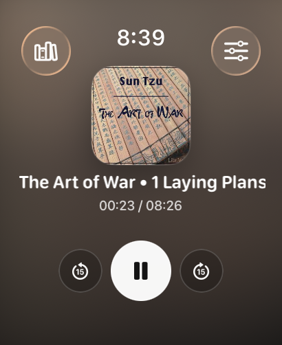
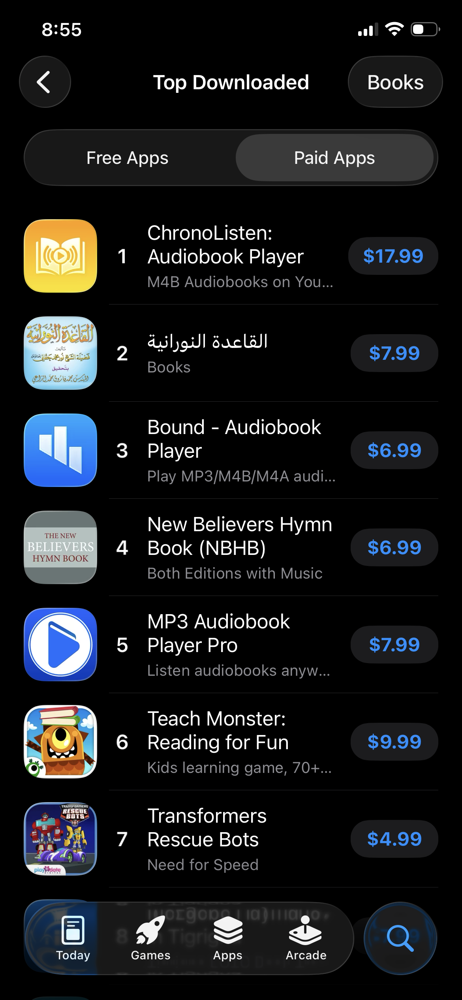

30 Mar 2026 • Calgary, AB
Apple gave me a gift for my birthday on Saturday: my app passed App Store review. ChronoListen, my Apple Watch and iOS audiobook player, is available right now on the App Store, something i've always wanted to be able to say
Why I Built It
I just wanted to listen to audiobooks on my Apple Watch. That's it. I own my audiobook files (M4B files, the standard format) and I wanted them on my wrist, offline, without uploading them to some stranger's server or paying a subscription forever. Simple enough request, right?
Turns out, no app did this. The only alternative I could find sends your files to a third party server and charges $6.50 a month. That felt wrong to me. These are my files, on my devices. Why does a middleman need to be involved at all?
So I decided I'd just build it myself. First and foremost to solve my own problem, but I really hope other people find it useful too.
What ChronoListen Does
ChronoListen is the audiobook player built for listeners who own their files. Import your M4B and M4A audiobooks directly from the Files app, and sync them to your Watch over Bluetooth. No accounts, no cloud upload, no third party server required. Ever. It's the only app that lets you send sideloaded audiobooks direct to Apple Watch.

Once a book is on your watch, it stays there. You can leave your phone at home, go for a run, and your audiobook is right there with you, offline, no iPhone needed. Playback progress stays in sync across both devices when you come back.
The playback features are everything you'd want: full chapter navigation, adjustable speed from 0.75x to 3x, configurable skip intervals, and background playback with lock screen controls. It's a complete listening experience.
Privacy First.
This one matters to me. All data stays on your devices. No accounts, no cloud, no analytics, no ads, no tracking, no subscriptions. Your audiobooks. Your watch. No middleman.
It costs less than three months subscription of the only alternative I could find. And once you buy it, it's yours forever. No recurring fees, just your audiobooks, offline, on your Apple Watch and iPhone, forever.
The Technical Side
Getting audiobook files from an iPhone to an Apple Watch without a server in the middle is a interesting problem. The sync happens directly over Bluetooth using the Watch Connectivity framework, which means the transfer is local, private, and doesn't require an internet connection at all. M4B is a container format that carries chapters as metadata, so parsing and navigating those correctly took real work to get right.
This was my first shipped iOS app, and the gap between "working on my own device" and "passing App Store review" is something else. Apple's review process is thorough. Getting through it felt like its own milestone.
One More Thing
ChronoListen is currently #1 on the App Store charts for paid Books apps. I need to be upfront about something though: it has four downloads. I am the market leader with four customers haha which is pretty cool.

Get It
It's $12.99 USD / $17.99 CAD, a one time purchase. The only competitor charges $6.50 a month, so you break even in less than three months and own it forever after that. If you or someone you know owns their audiobook files and wants them on their Apple Watch, ChronoListen is on the App Store now ↗. It would mean the world to me if you told the audiobook fan in your life about it.
TL;DR: I was frustrated that no app let me listen to my own audiobook files on my Apple Watch without a subscription or a third party server, so I spent six months building one. It's called ChronoListen, it's a one time purchase, and it's currently #1 on the App Store charts* .